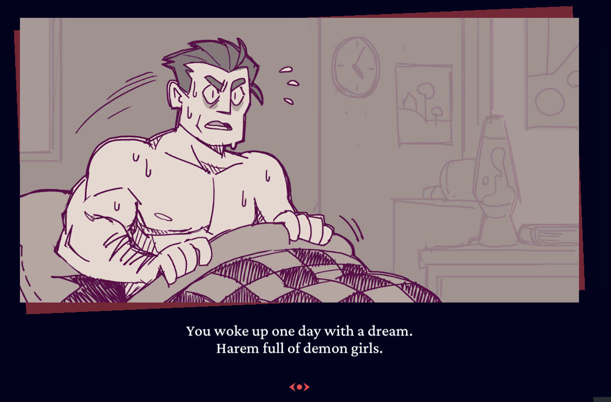
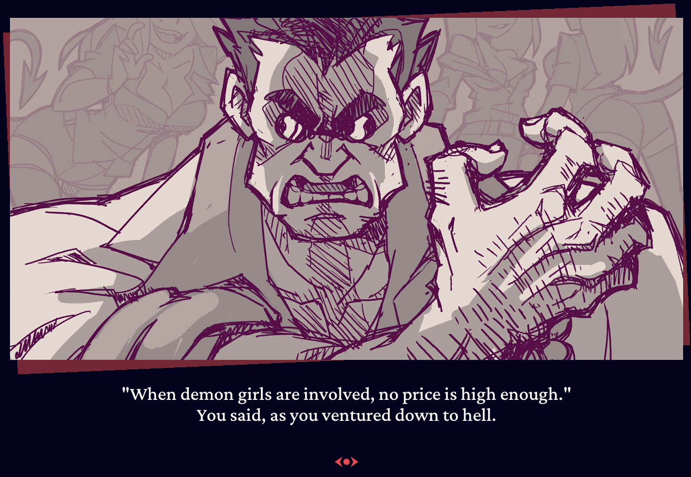
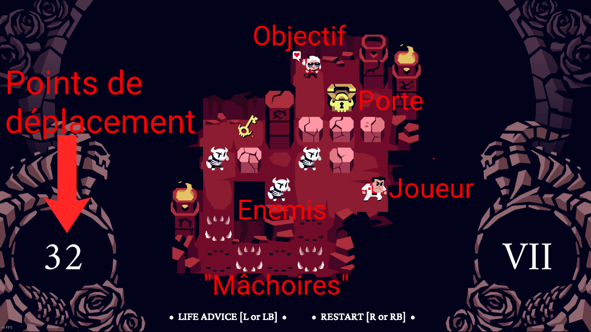
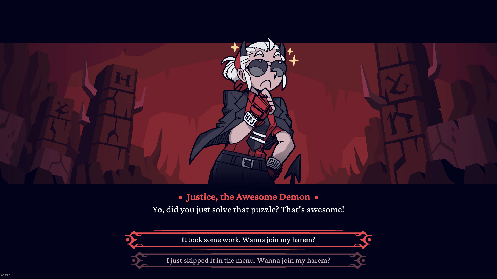
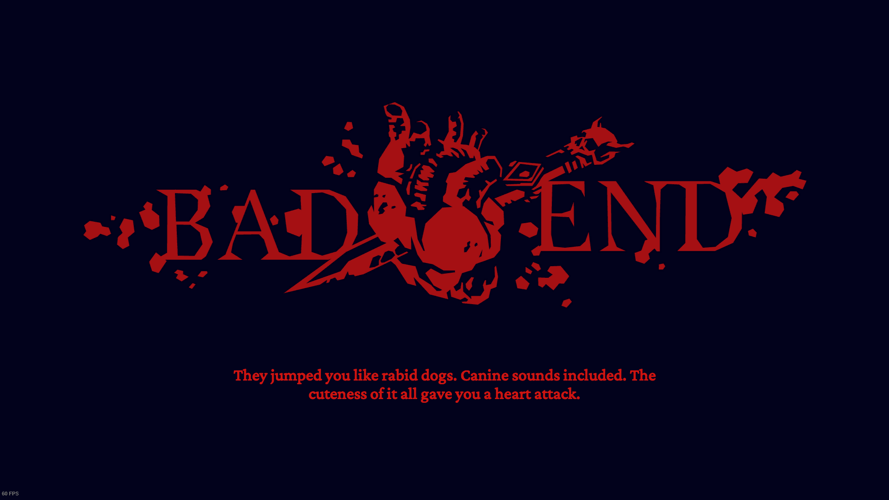
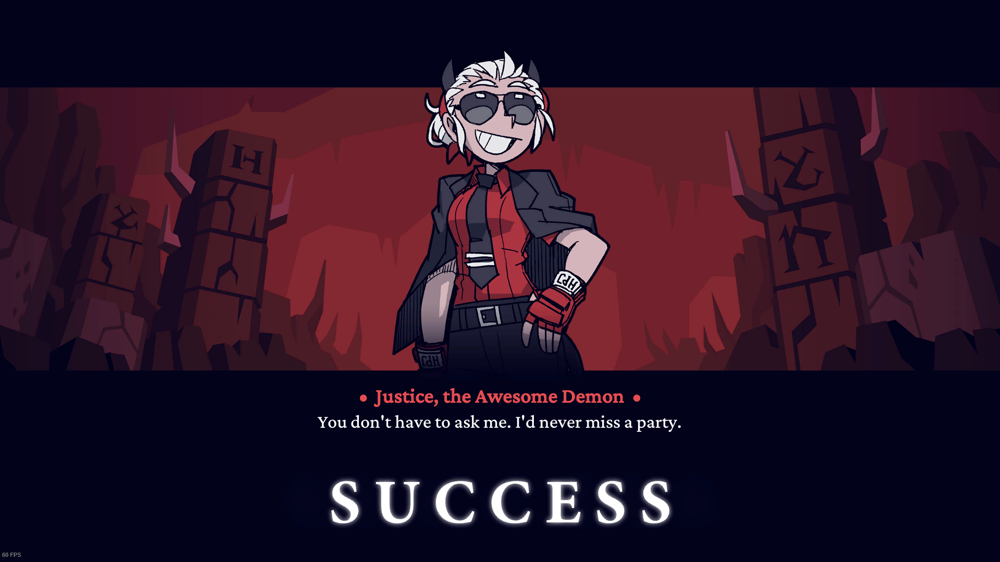

Contactez-nous ci-dessous!
Contactez-nous ci-dessous!
Helltaker est un jeu gratuit, qui mélange puzzles et un peu de simulation de drague.
Dans ce jeu, le joueur incarne "The helltaker" qui se rend en enfer pour se créer un harem de filles démons.
Au fur et à mesure de son aventure il agrandira son harem grace au pouvoir légendaire des crêpes, du café et des jeux de stratégie au tour par tour.


(Téléchargez le jeu sur Steam 👇)
Helltaker est principalement un jeu de puzzles, dans lequel le joueur a un nombre limité de déplacements pour arriver à l'objectif (la demon girl).

Le joueur à un nombre de déplacements limité. Si il n'arrive pas à completer le puzzle avec ce nombre de
déplacements, il meurt et doit recommencer le puzzle.
Le joueur doit arriver devant la fille démon, puis répondre correctement à un dialogue en devinant la réponse
en se basant sur sa personnalité.

Si le joueur choisit la mauvaise réponse, il meurt et recommence le puzzle.

Mais si il réponds correctement, il ajoute la fille à son harem et passe au niveau suivant :

Il y a différents type d'obstacles que le joueur devra surmonter :
- Les blocs de pierre peuvent être poussés si il n'y a rien derrière eux, comme dans les jeux Sokoban.
- Les squelettes peuvent être poussés comme les murs mais sont détruits si on les pousse dans un mur ou un
bloc.
- Il peux aussi y avoir des "machoires" dans le sol qui nous enlèvent 1 point de deplacement si on les touche, dans certains niveaux elles alternent entre rentrées et sorties à chaque déplacement du joueur.
Dans certains niveaux, il est nécessaire de rammasser une clé pour ouvrir une porte indispensable à la
résolution du puzzle.
(exemple ci-dessous, le niveau 6 👇)
A la fin du jeu, le gameplay change, il y a une phase semblable à un bullet-hell où le joueur doit éviter les attaques du boss tout en l'attaquant.
La bande originale de Helltaker a été créée par l'artiste Mittsies, compositeur de musique éléctronique, et
comporte 5 musiques de style progressive house et psytrance.
OST Complète :
Helltaker a été programmé par un seul développeur polonais, Łukasz Piskorz, aussi connu sous le pseudonyme "Vanripper".
C'est aussi lui qui à créé tout l'artwork du jeu.
Il a d'ailleurs créé ses propres épisodes d'une "mini-série" appellé Daystone, disponible sur sa chaîne Youtube.
Contactez-nous ci-dessous!